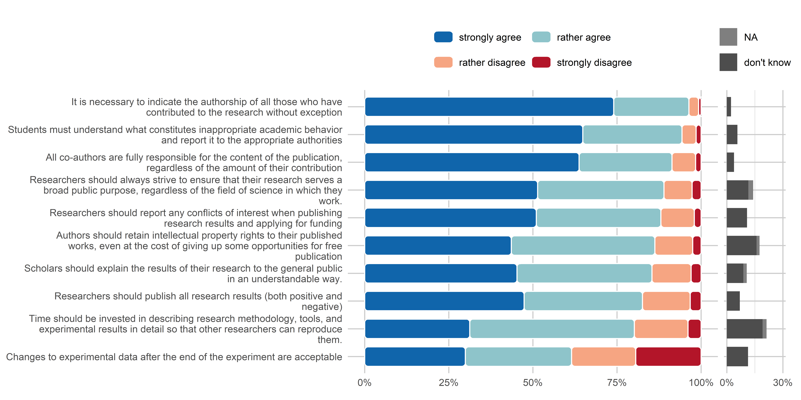
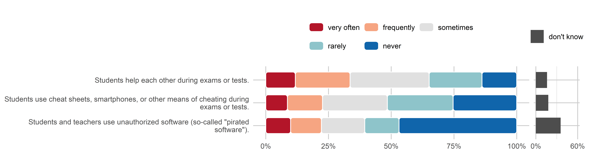

Survey Analysis
Overview
The following plots give a top-level overview over the responses to all questions, grouped by topics. They are also differentiated between questions that were about the extent of agreement with certain statements and questions that asked about the estimated frequency with which certain practices occur at the institution. The survey was conducted in three waves in three subsequent years, but all responses are combined for the overview plots.
Research
Open Science
Multiple questions within the survey inquired about how much participants agreed with certain statements related to different Open Science practices. The full statements in this group are presented in the table below.
In the following figure, responses are visualized to the Open Science questions. They are sorted by the amount of agreement with these statements. Proportions of the different answer categories were calculated after removing missing and “don’t know” responses. These responses are plotted separately on the right hand side, indicating their percentage of the total responses.
out <- plot_agreement_overview(df, var_overview, os, label_width = 75)
out$p
knitr::kable(out$data)| variable | value | n | proportion |
|---|---|---|---|
| Research results should be in open access, i.e. freely available to the academic community and the general public. | strongly agree | 13286 | 57.57% |
| Research results should be in open access, i.e. freely available to the academic community and the general public. | rather agree | 8061 | 34.93% |
| Research results should be in open access, i.e. freely available to the academic community and the general public. | rather disagree | 1400 | 6.07% |
| Research results should be in open access, i.e. freely available to the academic community and the general public. | strongly disagree | 331 | 1.43% |
| I can explain what “open science” is. | strongly agree | 7569 | 37.35% |
| I can explain what “open science” is. | rather agree | 10251 | 50.59% |
| I can explain what “open science” is. | rather disagree | 1902 | 9.39% |
| I can explain what “open science” is. | strongly disagree | 541 | 2.67% |
| Experimental data should be published as openly as possible. | strongly agree | 7544 | 36.41% |
| Experimental data should be published as openly as possible. | rather agree | 9714 | 46.89% |
| Experimental data should be published as openly as possible. | rather disagree | 2836 | 13.69% |
| Experimental data should be published as openly as possible. | strongly disagree | 624 | 3.01% |
| The names of peer reviewers of research papers should be made public, regardless of whether their conclusion is positive or negative. | strongly agree | 9788 | 46.07% |
| The names of peer reviewers of research papers should be made public, regardless of whether their conclusion is positive or negative. | rather agree | 7698 | 36.23% |
| The names of peer reviewers of research papers should be made public, regardless of whether their conclusion is positive or negative. | rather disagree | 2565 | 12.07% |
| The names of peer reviewers of research papers should be made public, regardless of whether their conclusion is positive or negative. | strongly disagree | 1194 | 5.62% |
| Researchers should invest time in describing their experimental data with appropriate metadata so that the data can be easily found and reused. | strongly agree | 5984 | 31.38% |
| Researchers should invest time in describing their experimental data with appropriate metadata so that the data can be easily found and reused. | rather agree | 9423 | 49.42% |
| Researchers should invest time in describing their experimental data with appropriate metadata so that the data can be easily found and reused. | rather disagree | 2952 | 15.48% |
| Researchers should invest time in describing their experimental data with appropriate metadata so that the data can be easily found and reused. | strongly disagree | 709 | 3.72% |
| Authors of research papers and peer reviewers should be able to communicate directly without intermediaries. | strongly agree | 7643 | 37.86% |
| Authors of research papers and peer reviewers should be able to communicate directly without intermediaries. | rather agree | 7959 | 39.43% |
| Authors of research papers and peer reviewers should be able to communicate directly without intermediaries. | rather disagree | 2911 | 14.42% |
| Authors of research papers and peer reviewers should be able to communicate directly without intermediaries. | strongly disagree | 1672 | 8.28% |
| Researchers should publish author’s versions of manuscripts on open online resources such as Zenodo, institutional repositories, etc. | strongly agree | 6065 | 32.70% |
| Researchers should publish author’s versions of manuscripts on open online resources such as Zenodo, institutional repositories, etc. | rather agree | 7962 | 42.92% |
| Researchers should publish author’s versions of manuscripts on open online resources such as Zenodo, institutional repositories, etc. | rather disagree | 3259 | 17.57% |
| Researchers should publish author’s versions of manuscripts on open online resources such as Zenodo, institutional repositories, etc. | strongly disagree | 1264 | 6.81% |
| The texts of positive and negative peer reviews of research papers should be published alongside these papers. | strongly agree | 6788 | 33.24% |
| The texts of positive and negative peer reviews of research papers should be published alongside these papers. | rather agree | 8253 | 40.42% |
| The texts of positive and negative peer reviews of research papers should be published alongside these papers. | rather disagree | 3846 | 18.83% |
| The texts of positive and negative peer reviews of research papers should be published alongside these papers. | strongly disagree | 1533 | 7.51% |
| If software development is part of a research project, the source code should be published alongside the relevant scientific papers. | strongly agree | 4525 | 25.68% |
| If software development is part of a research project, the source code should be published alongside the relevant scientific papers. | rather agree | 6982 | 39.62% |
| If software development is part of a research project, the source code should be published alongside the relevant scientific papers. | rather disagree | 4258 | 24.16% |
| If software development is part of a research project, the source code should be published alongside the relevant scientific papers. | strongly disagree | 1856 | 10.53% |
| Research papers should be openly available even before the official peer review process, i.e. before a thorough review of their content. | strongly agree | 3595 | 16.75% |
| Research papers should be openly available even before the official peer review process, i.e. before a thorough review of their content. | rather agree | 4651 | 21.67% |
| Research papers should be openly available even before the official peer review process, i.e. before a thorough review of their content. | rather disagree | 8114 | 37.81% |
| Research papers should be openly available even before the official peer review process, i.e. before a thorough review of their content. | strongly disagree | 5099 | 23.76% |
Reporting and Academic Integrity
Nine items inquire about the agreement with statements related to reporting and academic integrity. The full items are presented in the table below.
Caution: Question X19 (“Changes to the experimental data […] are acceptable”) is the only statement phrased in the opposite direction. This needs to be considered when interpreting the responses.
out <- plot_agreement_overview(df, var_overview, raia)
out$p
knitr::kable(out$data)| variable | value | n | proportion |
|---|---|---|---|
| It is necessary to indicate the authorship of all those who have contributed to the research without exception | strongly agree | 17879 | 74.01% |
| It is necessary to indicate the authorship of all those who have contributed to the research without exception | rather agree | 5400 | 22.35% |
| It is necessary to indicate the authorship of all those who have contributed to the research without exception | rather disagree | 700 | 2.90% |
| It is necessary to indicate the authorship of all those who have contributed to the research without exception | strongly disagree | 179 | 0.74% |
| All co-authors are fully responsible for the content of the publication, regardless of the amount of their contribution | strongly agree | 15135 | 63.72% |
| All co-authors are fully responsible for the content of the publication, regardless of the amount of their contribution | rather agree | 6557 | 27.61% |
| All co-authors are fully responsible for the content of the publication, regardless of the amount of their contribution | rather disagree | 1665 | 7.01% |
| All co-authors are fully responsible for the content of the publication, regardless of the amount of their contribution | strongly disagree | 394 | 1.66% |
| Researchers should always strive to ensure that their research serves a broad public purpose, regardless of the field of science in which they work. | strongly agree | 10908 | 51.39% |
| Researchers should always strive to ensure that their research serves a broad public purpose, regardless of the field of science in which they work. | rather agree | 7970 | 37.55% |
| Researchers should always strive to ensure that their research serves a broad public purpose, regardless of the field of science in which they work. | rather disagree | 1778 | 8.38% |
| Researchers should always strive to ensure that their research serves a broad public purpose, regardless of the field of science in which they work. | strongly disagree | 570 | 2.69% |
| Researchers should report any conflicts of interest when publishing research results and applying for funding | strongly agree | 11238 | 50.99% |
| Researchers should report any conflicts of interest when publishing research results and applying for funding | rather agree | 8165 | 37.05% |
| Researchers should report any conflicts of interest when publishing research results and applying for funding | rather disagree | 2185 | 9.91% |
| Researchers should report any conflicts of interest when publishing research results and applying for funding | strongly disagree | 451 | 2.05% |
| Authors should retain intellectual property rights to their published works, even at the cost of giving up some opportunities for free publication | strongly agree | 8878 | 43.57% |
| Authors should retain intellectual property rights to their published works, even at the cost of giving up some opportunities for free publication | rather agree | 8696 | 42.68% |
| Authors should retain intellectual property rights to their published works, even at the cost of giving up some opportunities for free publication | rather disagree | 2291 | 11.24% |
| Authors should retain intellectual property rights to their published works, even at the cost of giving up some opportunities for free publication | strongly disagree | 511 | 2.51% |
| Scholars should explain the results of their research to the general public in an understandable way. | strongly agree | 9989 | 45.26% |
| Scholars should explain the results of their research to the general public in an understandable way. | rather agree | 8852 | 40.11% |
| Scholars should explain the results of their research to the general public in an understandable way. | rather disagree | 2570 | 11.64% |
| Scholars should explain the results of their research to the general public in an understandable way. | strongly disagree | 659 | 2.99% |
| Researchers should publish all research results (both positive and negative) | strongly agree | 10892 | 47.38% |
| Researchers should publish all research results (both positive and negative) | rather agree | 8089 | 35.18% |
| Researchers should publish all research results (both positive and negative) | rather disagree | 3259 | 14.18% |
| Researchers should publish all research results (both positive and negative) | strongly disagree | 750 | 3.26% |
| Time should be invested in describing research methodology, tools, and experimental results in detail so that other researchers can reproduce them. | strongly agree | 6074 | 31.23% |
| Time should be invested in describing research methodology, tools, and experimental results in detail so that other researchers can reproduce them. | rather agree | 9512 | 48.90% |
| Time should be invested in describing research methodology, tools, and experimental results in detail so that other researchers can reproduce them. | rather disagree | 3103 | 15.95% |
| Time should be invested in describing research methodology, tools, and experimental results in detail so that other researchers can reproduce them. | strongly disagree | 762 | 3.92% |
| Changes to experimental data after the end of the experiment are acceptable | strongly agree | 6553 | 29.91% |
| Changes to experimental data after the end of the experiment are acceptable | rather agree | 6919 | 31.58% |
| Changes to experimental data after the end of the experiment are acceptable | rather disagree | 4174 | 19.05% |
| Changes to experimental data after the end of the experiment are acceptable | strongly disagree | 4262 | 19.45% |
Six questions were about the frequency with which certain questionable research practices around reporting occur at the respondent’s institution (see table below).
The following overview plot is sorted by the proportion of “never” and “rarely” responses. These questions could not be skipped, therefore there are no missing answers.
out <- plot_frequency_overview(df, var_overview, raif)
out$p
knitr::kable(out$data)| variable | value | n | proportion |
|---|---|---|---|
| Selective citations to support one’s conclusions or to please editors, reviewers, colleagues, etc. | very often | 824 | 5.51% |
| Selective citations to support one’s conclusions or to please editors, reviewers, colleagues, etc. | frequently | 1991 | 13.32% |
| Selective citations to support one’s conclusions or to please editors, reviewers, colleagues, etc. | sometimes | 3771 | 25.22% |
| Selective citations to support one’s conclusions or to please editors, reviewers, colleagues, etc. | rarely | 3326 | 22.25% |
| Selective citations to support one’s conclusions or to please editors, reviewers, colleagues, etc. | never | 5039 | 33.70% |
| The author uses his own previous publications as part of a new work without proper acknowledgment or citation of the original. | very often | 726 | 4.61% |
| The author uses his own previous publications as part of a new work without proper acknowledgment or citation of the original. | frequently | 1870 | 11.87% |
| The author uses his own previous publications as part of a new work without proper acknowledgment or citation of the original. | sometimes | 4715 | 29.94% |
| The author uses his own previous publications as part of a new work without proper acknowledgment or citation of the original. | rarely | 4346 | 27.60% |
| The author uses his own previous publications as part of a new work without proper acknowledgment or citation of the original. | never | 4091 | 25.98% |
| A person attributes to himself or herself the authorship of a work (assignment, article, etc.) that he or she did not actually perform, but arranged for others to perform it for a fee or in another way. | very often | 851 | 5.59% |
| A person attributes to himself or herself the authorship of a work (assignment, article, etc.) that he or she did not actually perform, but arranged for others to perform it for a fee or in another way. | frequently | 1376 | 9.04% |
| A person attributes to himself or herself the authorship of a work (assignment, article, etc.) that he or she did not actually perform, but arranged for others to perform it for a fee or in another way. | sometimes | 3091 | 20.32% |
| A person attributes to himself or herself the authorship of a work (assignment, article, etc.) that he or she did not actually perform, but arranged for others to perform it for a fee or in another way. | rarely | 2872 | 18.88% |
| A person attributes to himself or herself the authorship of a work (assignment, article, etc.) that he or she did not actually perform, but arranged for others to perform it for a fee or in another way. | never | 7025 | 46.17% |
| Using other author’s published papers and ideas without proper reference to the original source. | very often | 868 | 5.02% |
| Using other author’s published papers and ideas without proper reference to the original source. | frequently | 1643 | 9.50% |
| Using other author’s published papers and ideas without proper reference to the original source. | sometimes | 4591 | 26.55% |
| Using other author’s published papers and ideas without proper reference to the original source. | rarely | 5105 | 29.52% |
| Using other author’s published papers and ideas without proper reference to the original source. | never | 5084 | 29.40% |
| Making up data or facts about a scientific activity, for example, a research experiment. | very often | 490 | 3.33% |
| Making up data or facts about a scientific activity, for example, a research experiment. | frequently | 883 | 6.00% |
| Making up data or facts about a scientific activity, for example, a research experiment. | sometimes | 2419 | 16.43% |
| Making up data or facts about a scientific activity, for example, a research experiment. | rarely | 2619 | 17.79% |
| Making up data or facts about a scientific activity, for example, a research experiment. | never | 8313 | 56.46% |
| The author passes off other people’s academic achievements as his own. | very often | 476 | 3.12% |
| The author passes off other people’s academic achievements as his own. | frequently | 799 | 5.24% |
| The author passes off other people’s academic achievements as his own. | sometimes | 2070 | 13.57% |
| The author passes off other people’s academic achievements as his own. | rarely | 2571 | 16.85% |
| The author passes off other people’s academic achievements as his own. | never | 9339 | 61.22% |
Education
While most questions referred to research, others focused more on education at the respective HEI. Respondents were inquired about their agreement with certain education-related statements (see table below), most of them also related to Open Science, but in an educational context.
out <- plot_agreement_overview(df, var_overview, edua)
out$p
knitr::kable(out$data)| variable | value | n | proportion |
|---|---|---|---|
| Students must understand what constitutes inappropriate academic behavior and report it to the appropriate authorities | strongly agree | 15109 | 64.81% |
| Students must understand what constitutes inappropriate academic behavior and report it to the appropriate authorities | rather agree | 6874 | 29.49% |
| Students must understand what constitutes inappropriate academic behavior and report it to the appropriate authorities | rather disagree | 979 | 4.20% |
| Students must understand what constitutes inappropriate academic behavior and report it to the appropriate authorities | strongly disagree | 350 | 1.50% |
| The quality of educational services at my higher education institution is high | strongly agree | 11113 | 45.91% |
| The quality of educational services at my higher education institution is high | rather agree | 10113 | 41.78% |
| The quality of educational services at my higher education institution is high | rather disagree | 2303 | 9.51% |
| The quality of educational services at my higher education institution is high | strongly disagree | 677 | 2.80% |
| Higher education institutions should provide open access to their educational resources (textbooks, manuals, various digital tools, etc.) for everyone. | strongly agree | 11075 | 50.39% |
| Higher education institutions should provide open access to their educational resources (textbooks, manuals, various digital tools, etc.) for everyone. | rather agree | 6468 | 29.43% |
| Higher education institutions should provide open access to their educational resources (textbooks, manuals, various digital tools, etc.) for everyone. | rather disagree | 3059 | 13.92% |
| Higher education institutions should provide open access to their educational resources (textbooks, manuals, various digital tools, etc.) for everyone. | strongly disagree | 1377 | 6.27% |
| Students should openly publish the full texts of their diploma theses | strongly agree | 9281 | 41.33% |
| Students should openly publish the full texts of their diploma theses | rather agree | 7594 | 33.82% |
| Students should openly publish the full texts of their diploma theses | rather disagree | 4224 | 18.81% |
| Students should openly publish the full texts of their diploma theses | strongly disagree | 1356 | 6.04% |
The occurrence of three different types of student misconduct were also investigated within the survey (see table and figure below).
out <- plot_frequency_overview(df, var_overview, eduf)
out$p
knitr::kable(out$data)| variable | value | n | proportion |
|---|---|---|---|
| Students help each other during exams or tests. | very often | 2441 | 11.77% |
| Students help each other during exams or tests. | frequently | 4522 | 21.81% |
| Students help each other during exams or tests. | sometimes | 6540 | 31.54% |
| Students help each other during exams or tests. | rarely | 4365 | 21.05% |
| Students help each other during exams or tests. | never | 2866 | 13.82% |
| Students use cheat sheets, smartphones, or other means of cheating during exams or tests. | very often | 1747 | 8.62% |
| Students use cheat sheets, smartphones, or other means of cheating during exams or tests. | frequently | 2836 | 13.99% |
| Students use cheat sheets, smartphones, or other means of cheating during exams or tests. | sometimes | 5238 | 25.85% |
| Students use cheat sheets, smartphones, or other means of cheating during exams or tests. | rarely | 5309 | 26.20% |
| Students use cheat sheets, smartphones, or other means of cheating during exams or tests. | never | 5136 | 25.34% |
| Students and teachers use unauthorized software (so-called “pirated software”). | very often | 1571 | 9.88% |
| Students and teachers use unauthorized software (so-called “pirated software”). | frequently | 1952 | 12.28% |
| Students and teachers use unauthorized software (so-called “pirated software”). | sometimes | 2749 | 17.29% |
| Students and teachers use unauthorized software (so-called “pirated software”). | rarely | 2169 | 13.65% |
| Students and teachers use unauthorized software (so-called “pirated software”). | never | 7454 | 46.90% |
Institution/Administration
The survey contained five questions on how misconduct is handled at the respondent’s respective institution. Respondents indicated the frequency with which certain practices occurred at their institution.
out <- plot_frequency_overview(df, var_overview, adm)
out$p
knitr::kable(out$data)| variable | value | n | proportion |
|---|---|---|---|
| The university administration accuses and punishes whistleblowers of academic integrity violations. | very often | 831 | 6.94% |
| The university administration accuses and punishes whistleblowers of academic integrity violations. | frequently | 1686 | 14.09% |
| The university administration accuses and punishes whistleblowers of academic integrity violations. | sometimes | 2151 | 17.97% |
| The university administration accuses and punishes whistleblowers of academic integrity violations. | rarely | 1631 | 13.63% |
| The university administration accuses and punishes whistleblowers of academic integrity violations. | never | 5668 | 47.36% |
| The administration of the institution tolerates cases of academic dishonesty. | very often | 710 | 4.50% |
| The administration of the institution tolerates cases of academic dishonesty. | frequently | 1190 | 7.54% |
| The administration of the institution tolerates cases of academic dishonesty. | sometimes | 1996 | 12.65% |
| The administration of the institution tolerates cases of academic dishonesty. | rarely | 1723 | 10.92% |
| The administration of the institution tolerates cases of academic dishonesty. | never | 10156 | 64.38% |
| Abuse of official position or authority to encourage academic dishonesty. | very often | 628 | 3.74% |
| Abuse of official position or authority to encourage academic dishonesty. | frequently | 797 | 4.74% |
| Abuse of official position or authority to encourage academic dishonesty. | sometimes | 1825 | 10.86% |
| Abuse of official position or authority to encourage academic dishonesty. | rarely | 2015 | 11.99% |
| Abuse of official position or authority to encourage academic dishonesty. | never | 11539 | 68.67% |
| Falsely accusing a student or employee of misconduct or other violations. | very often | 419 | 2.48% |
| Falsely accusing a student or employee of misconduct or other violations. | frequently | 743 | 4.39% |
| Falsely accusing a student or employee of misconduct or other violations. | sometimes | 2344 | 13.85% |
| Falsely accusing a student or employee of misconduct or other violations. | rarely | 3097 | 18.30% |
| Falsely accusing a student or employee of misconduct or other violations. | never | 10323 | 60.99% |
| Incitement to violate academic integrity. | very often | 405 | 2.38% |
| Incitement to violate academic integrity. | frequently | 649 | 3.81% |
| Incitement to violate academic integrity. | sometimes | 1746 | 10.25% |
| Incitement to violate academic integrity. | rarely | 2039 | 11.97% |
| Incitement to violate academic integrity. | never | 12191 | 71.59% |
One general item also inquired about the following statement: “Overall, the processes at my higher education institution are organised in a clear and transparent manner”.
out <- plot_agreement_overview(df, var_overview, "X15")
out$pknitr::kable(out$data)| variable | value | n | proportion |
|---|---|---|---|
| Overall, the processes at my higher education institution are organised in a clear and transparent manner | strongly agree | 12519 | 51.65% |
| Overall, the processes at my higher education institution are organised in a clear and transparent manner | rather agree | 9210 | 38.00% |
| Overall, the processes at my higher education institution are organised in a clear and transparent manner | rather disagree | 1882 | 7.76% |
| Overall, the processes at my higher education institution are organised in a clear and transparent manner | strongly disagree | 627 | 2.59% |
The agreement is subsequently visualized by the different institutional vs. the national survey.
df$X63 <- factor(df$X63,
levels = c("National", "LPU", "SumDU", "DonNU", "LutskNTU"))
out <- plot_agreement(df, var_overview, "X15", group = "X63", xlim = 3)
out$pknitr::kable(out$data)| X63 | var | val | n | perc | prop | order |
|---|---|---|---|---|---|---|
| National | X15 | strongly agree | 10640 | 52.48 | 0.5352113 | 0 |
| National | X15 | rather agree | 7306 | 36.04 | 0.3675050 | 0 |
| National | X15 | rather disagree | 1450 | 7.15 | 0.0729376 | 0 |
| National | X15 | strongly disagree | 484 | 2.39 | 0.0243461 | 0 |
| LPU | X15 | strongly agree | 897 | 34.07 | 0.3467337 | 0 |
| LPU | X15 | rather agree | 1242 | 47.17 | 0.4800928 | 0 |
| LPU | X15 | rather disagree | 326 | 12.38 | 0.1260147 | 0 |
| LPU | X15 | strongly disagree | 122 | 4.63 | 0.0471589 | 0 |
| SumDU | X15 | strongly agree | 503 | 56.52 | 0.5768349 | 0 |
| SumDU | X15 | rather agree | 317 | 35.62 | 0.3635321 | 0 |
| SumDU | X15 | rather disagree | 43 | 4.83 | 0.0493119 | 0 |
| SumDU | X15 | strongly disagree | 9 | 1.01 | 0.0103211 | 0 |
| DonNU | X15 | strongly agree | 280 | 48.19 | 0.4844291 | 0 |
| DonNU | X15 | rather agree | 238 | 40.96 | 0.4117647 | 0 |
| DonNU | X15 | rather disagree | 49 | 8.43 | 0.0847751 | 0 |
| DonNU | X15 | strongly disagree | 11 | 1.89 | 0.0190311 | 0 |
| LutskNTU | X15 | strongly agree | 199 | 60.86 | 0.6199377 | 0 |
| LutskNTU | X15 | rather agree | 107 | 32.72 | 0.3333333 | 0 |
| LutskNTU | X15 | rather disagree | 14 | 4.28 | 0.0436137 | 0 |
| LutskNTU | X15 | strongly disagree | 1 | 0.31 | 0.0031153 | 0 |
National Open Science Plan
In 2022, one additional question inquire participants about whether they were aware that the Ukrainian government had recently approved a National Open Science Plan.
os_plan <- df %>%
tabyl(X59) %>%
adorn_percentages("col") %>%
adorn_pct_formatting(digits = 1) %>%
adorn_ns()
knitr::kable(os_plan, format = "html")| X59 | n | percent | valid_percent |
|---|---|---|---|
| no | 0.3 (7,344) | 29.7% (0.2972678) | 67.1% (0.6711753) |
| yes | 0.1 (3,598) | 14.6% (0.1456385) | 32.9% (0.3288247) |
| NA | 0.6 (13,763) | 55.7% (0.5570937) | - (NA) |